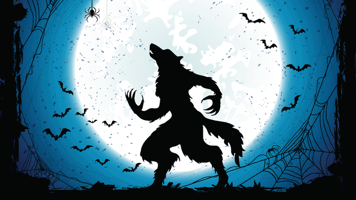

Overview Of The Game
Werewolf Killing is a multiplayer strategy board game driven by verbal description, contesting eloquence and analytical judgment. The usual version of the game requires 9 players and a narrator to participate in the interaction. Out of the 9 players, 3 will belong in the werewolf group and 6 in the good group. There is a majority of players in the good group but they don’t know their team members. The main methods of eliminating players are voting to exile and character skills.